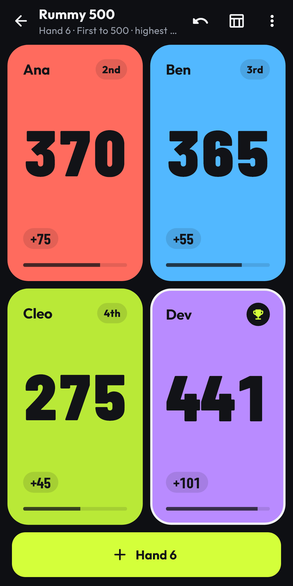
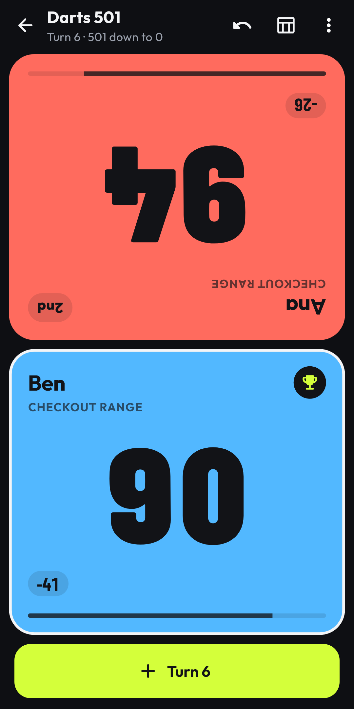
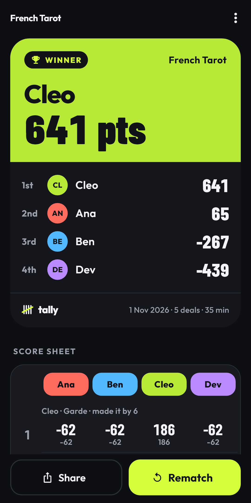

Made for the table
Giant numbers, a bright tile per player, live ranking and a face-to-face layout for players sitting opposite.
Popular games built in
Rummy, Rummy 500, Crazy Eights, Darts 501 & 301, French Tarot calculator, golf scorecard, Hearts, Belote, Dominoes and Table Tennis.
Your house rules
Highest or lowest wins, target scores, fixed rounds or countdowns. Save them and start in one tap.
History & bragging rights
Every game saved by game night, a leaderboard with win rates, shareable results and one-tap rematches.